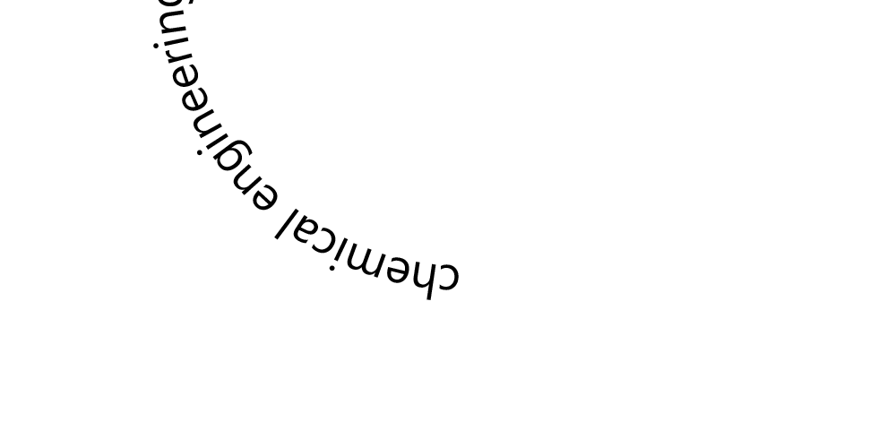
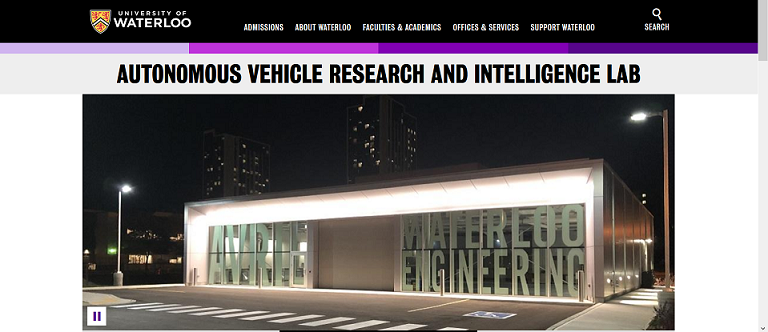

Yu An Chen
647-704-5368
yhedgeb@gmail.com
University of Waterloo
Deloitte - Climate Change Risk Analyst
Geotab - Sustainability & EV Infrastructure Solutions Engineering
Toyota Motor Manufacturing Canada - Engineering Analyst
Amphenol Canada - Quality Assurance Lab. Engineering Assistant
AVRIL - University of Waterloo - Automotive Engineering Assistant
Team Waterloop - University of Waterloo - Marketing Lead
UWAFT - University of Waterloo - Electrical Team Member
- I'm currently:
Based in Mississauga, Ontario
Looking for full-time work starting May 2024
647-704-5368 yhedgeb@gmail.com University of Waterloo
Deloitte - Climate Change Risk Analyst
Geotab - Sustainability & EV Infrastructure Solutions Engineering
Toyota Motor Manufacturing Canada - Engineering Analyst
Amphenol Canada - Quality Assurance Lab. Engineering Assistant
AVRIL - University of Waterloo - Automotive Engineering Assistant Team Waterloop - University of Waterloo - Marketing Lead UWAFT - University of Waterloo - Electrical Team Member
Based in Mississauga, Ontario
Looking for full-time work starting May 2024
(Click headings to show/hide each section)
About Me
I study Chemical Engineering at the University of Waterloo. I work in automotive solutions and sustainability. I do marketing and graphic design on the side. I'm in my 3B term and I graduate in April 2024. In my moments of time free from engineering school I enjoy cooking and listening to melodramatic electronic music.
Want to talk? Find me on LinkedinProjects
The projects I work on that aren't related to a place I've worked for.
Index:
Pressure sensing chamber


See the Code
#include < math.h >
int ledPin = 2;
int ledPin1 = 3;
int ledPin2 = 4;
int ledPin3 = 5;
int ledPin4 = 6;
int ledPin5 = 7;
int ledPin6 = 8;
int ledPin7 = 9;
int ledPin8 = 10;
//int ledPin9 = 13;
int ledPins [10] = {ledPin, ledPin1, ledPin2, ledPin3, ledPin4, ledPin5, ledPin6, ledPin7, ledPin8};
int buttonPin = 12;
void setup() {
// put your setup code here, to run once:
Serial.begin(9600);
pinMode(11, OUTPUT);
digitalWrite(11, HIGH);
pinMode(ledPin, OUTPUT);
pinMode(ledPin2, OUTPUT);
pinMode(ledPin3, OUTPUT);
pinMode(ledPin4, OUTPUT);
pinMode(ledPin1, OUTPUT);
pinMode(ledPin5, OUTPUT);
pinMode(ledPin6, OUTPUT);
pinMode(ledPin7, OUTPUT);
pinMode(ledPin8, OUTPUT);
//pinMode(ledPin9, OUTPUT);
pinMode(buttonPin, INPUT);
}
void loop() {
// put your main code here, to run repeatedly:
float r_0 = 467.77;
float T_0 = 20;
//these are measured from the temperature in my room
float meas_pin = analogRead (A0);
float meas_pin2 = analogRead(A1);
float meas_pin3 = analogRead(A2);
//computing resistance
float v_1 = (meas_pin * (5.0/1024.0)) - (meas_pin2 * (5.0/1024.0));
float v_2 = (meas_pin2 * (5.0/1024.0)) - (meas_pin3 * (5.0/1024.0));
float r_u = (v_1 * 1000000)/(v_2);
//temperature (not being used)
float T = (((r_u/r_0)-1)/0.0395) +T_0;
//taking the average of 9 readings
float Values [10];
int i;
for (i = 0; i < 9; i = i + 1) {
Values[i] = r_u;
delay (50);
}
//pause button
if ((digitalRead(buttonPin)) == HIGH) {
Serial.println("Paused.");
delay (5000);
// int p = 1;
// while(p = 1) {
// delay (100);
// if ((digitalRead(buttonPin)) == HIGH) {
// int p = 1;
// }
// else {
// int p = 0;
// }
// }
}
//outputs
float r_avg = (Values [1] +Values [2] +Values [3] +Values [4] +Values [5] +Values [6] +Values [7] +Values [8] +Values [9]);
float p_avg = -0.113*log(r_avg/1000)+2.1431;
//Serial.println (r_avg/1000);
Serial.println (p_avg);
// indicator lights
float indicator = (p_avg + 0.1);
int j;
float k = 1;
for (j = 0; j < (sizeof(ledPins) / sizeof(int)); j = j + 1) {
digitalWrite(ledPins[j], LOW);
}
for (j = 0; j < (sizeof(ledPins) / sizeof(int)); j = j + 1) {
if ( indicator >= k ) {
digitalWrite(ledPins[j], HIGH);
}
k = k + 0.1;
}
k = 1;
} {kind=link}
Code snippets
Code that's unrelated to any other projects.Python
Class containing two methods that impute missing values in two data files called "training" and "test" with mean of each column.
# -*- coding: utf-8 -*-
"""
Created on Thu Dec 10 13:16:02 2020
@author: Yu An
"""
import pandas as pd
df = pd.read_csv('training.csv', header=None)
df2 = pd.read_csv('test.csv', header=None)
class mean_imputer:
def Fit_transform(self,training_data):
column = list(training_data)
for i in column:
sum_data = 0
count = 0
#Keeps track of number of present values in column
for j in df[i]:
if str.isnumeric(str(j)) == True:
sum_data = sum_data + int(j)
count+=1
mean = sum_data/count
#Calculates the mean of the values in the column
else:
pass
training_data[i] = training_data[i].fillna(mean)
#Replaces missing values with calculated mean
return(training_data)
def Transform(self,test_data):
column = list(test_data)
for i in column:
sum_data = 0
count = 0
#Keeps track of number of present values in column
for j in df[i]:
if str.isnumeric(str(j)) == True:
sum_data = sum_data + int(j)
count+=1
mean = sum_data/count
#Calculates the mean of the values in the column
else:
pass
test_data[i] = test_data[i].fillna(mean)
#Replaces missing values with calculated mean
return(test_data)
#Sample call
#test = mean_imputer()
#print(test.Transform(df))
# -*- coding: utf-8 -*-
"""
Created on Mon Dec 21 21:36:59 2020
@author: yhedg
"""
def rachfordRice(z1,z2,z3,k1,k2,k3,initial,threshold):
"""
Parameters
----------
zi : Int or float
Mole fraction of i in the feed.
ki : Int or float
Distribution coefficient of i, can be calculated by Pi(sat)/P
initial : Int or float
Initial guess for psi
threshold : Int or float
Accuracy threshold
Returns
-------
psi - ratio of D to F
"""
psi = initial #initial guess for ratio of D to F
#Rachford-rice equation
f = ((k1-1)*z1)/(1+psi*(k1-1)) + ((k2-1)*z2)/(1+psi*(k2-1)) + ((k3-1)*z3)/(1+psi*(k3-1))
#Derivative
fPrime =-( ((((k1-1)**2)*z1)/(1+psi*(k1-1)**2)) + ((((k2-1)**2)*z2)/(1+psi*(k2-1)**2)) + ((((k3-1)**2)*z3)/(1+psi*(k3-1)**2)) )
psiNext = psi-(f/fPrime)
#Iterate until accurate within threshold
while (psiNext-psi) > threshold:
psi = psiNext
f = ((k1-1)*z1)/(1+psi*(k1-1)) + ((k2-1)*z2)/(1+psi*(k2-1)) + ((k3-1)*z3)/(1+psi*(k3-1))
fPrime =-( ((((k1-1)**2)*z1)/(1+psi*(k1-1)**2)) + ((((k2-1)**2)*z2)/(1+psi*(k2-1)**2)) + ((((k3-1)**2)*z3)/(1+psi*(k3-1)**2)) )
psiNext = psi-(f/fPrime)
else:
return psi
"""
Example call
z1=0.42 z2=0.38 z3=0.20
k1=1.7795 k2=0.8895 k3=0.4575
Initial guess of 0.5
Threshold of 0.00001
"""
print(rachfordRice(0.42,0.38,0.20,1.7795,0.8895,0.4575,0.5,0.00001))
MATLAB
Finding the line integral along a curve
syms t
%To call the function, first parameterize the curve:
x=t; y=5;
%Then define the vector field:
F = [7*x^2+5*y];
%Then call the function:
LI = lineInt(x,y,F)
function LI = lineInt(x,y,F)
syms t
%Dot product F*dr:
D = F*[diff(x,t); diff(y,t)];
disp(D)
%Integral of line respect of t (dt):
I = int(D,t,0,5);
LI = I
end
My time at: Amphenol (Jan-Apr 2021)

At Amphenol, my main projects were qualification tests for various high-speed electrical connectors. I assembled parts according to drawings and specifications, which involved soldering and the usage of hand tools.
My time at: AVRIL (May-Aug 2020)

At the Autonomous Vehicle Research and Intelligence laboratory at the University of Waterloo, I worked in a hybrid engineering and business/marketing/communications role.

I helped maintain lab communications and relations, keeping the website up to date and using Salesforce to track contacts.